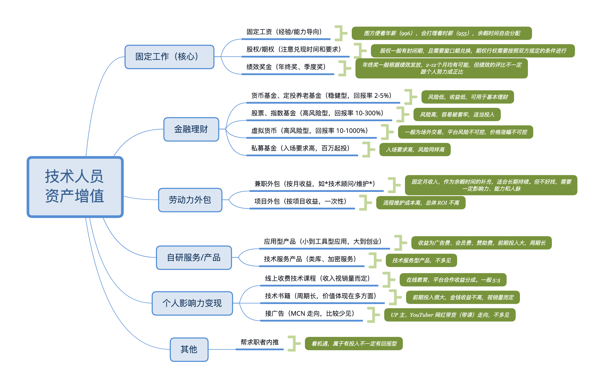

浅谈技术人员资产增值
最近趁空闲稍微总结了一下作为一个互联网技术人员，在资产管理方面所能够涉及到的相关领域。资产管理可以理解为是“理财”，但“理财”却又不仅仅限于传统我们所熟知的诸如银行金融产品、股票等直接与钱打交道的途径。随着近十几年来互联网技术的发展逐渐加快，并走向了一个又一个的阶段，诸如区块链、短视频、在线教育以及 MCN 等技术和产业领域的出现，实际上我们所能够接触到的资产增值相关的途径正变得越来越多。
关于这些途径我大致描绘在了如下的脑图中：

其中，固定工作 作为我们资产增值的最为主要的途径，其对总资产的贡献在初期可能占到 80% 到 90%。固定工作基本不会存在不稳定、预期收入不明确等问题，对资产的总体影响基本可以做到提前预测。来自固定工作的收入一般受到个人能力、以往工作经验以及公司类型等的影响。通常来讲，个人能力越强在同一职级内的薪资会越高。小型创业公司由于正处在业务的急速扩张期，其薪资区间会更加灵活。而成熟的大型公司由于需要保证人员组成的全局最优，因此薪资在同一职级内是有上限的，在特殊时期工作付出与对应回报也并不一定会成正比。比如通常在进行年终绩效评点时，新入职的社招员工、应届生员工以及处于特殊时期的女性更容易被“优化”也是不无道理的。这里要注意股权和期权的区别：股权一般是指公司给予员工等值的公司股票作为激励，并且这些股票可以在特定的窗口期在二级市场直接进行交易。交易过程去掉手续费以及税费后即为实际收益；而期权则是指公司授予员工的一种权利，该权利使得员工可以在未来的某个条件下以某个低于二级市场的固定价格来购买公司股票。因此两者适用对象也并不一样，再深入的区别可以参考维基百科上两者的解释。
金融理财 应该是日常生活中我们所能接触到的，与资产增值相关的最常见的一种方式了。这部分内容所包含的相关产品种类繁多，从常见的基金、股票，到近两年出现的虚拟货币，再到更加高级的私募基金，每一个领域的涉入都伴随的从小到大不等的风险。其中股票、指数\股票基金以及虚拟货币的投资风险较大，但也同时会伴随着较高的收益率。较为安全的货币基金和中短期定投基金可以作为日常稳健投资的一种最基础的方式，其收益率大致在 3% - 5% 左右。虚拟货币由于国家政策问题因此无法直接进行场内交易，而场外交易的方式由于平台并不会受到国家相关法律的监管，因此潜在风险仍然存在。股票就完全是仁者见仁智者见智了，擅长炒股的人可以利用自己的资源和技术优势获得不小的收益，但切记作为新手时不要盲目跟风。
第三个 劳动力外包 也是技术人员常见的资产增值方式。传统的外包也俗称“私活”，是指在工作之余利用自身技术优势来赋能到其他公司/个人项目进而获得一次性报酬的一种资产增值方式。虽然看起来很美好，但实际上却并不好做。公共劳动力众包平台上发布的项目需求质量参差不齐，如果不经过谨慎的筛选和沟通很容易造成源代码、钱两空的结果。并且公开平台上其实已经入驻了很多小型的软件服务工作室，个人开发者与其相比并不具有竞争优势，价钱也并不好协商。因此相对于个人开发者而言，我们一般谈到的私活都是经过朋友或者熟人间接推荐的，因此机会其实并不多。并且价格、需要的时间成本在一开始也并不好估计，最后造成甲方频繁修改需求，乙方投入更多精力，双方互相扯皮，最后不了了之不欢而散的结果，因此实际上 ROI 并不高还十分糟心。而另一种劳动力外包的方式便是兼职。兼职者在利用自身技术优势为雇佣方进行技术生产/咨询的同时，会获得来自雇佣方每月的固定报酬，这些报酬通常是不需要缴纳五险一金的，并且兼职者不会也没有权利参与到公司的其他诸如年终分红、年度旅游等其他福利中。两种劳动力外包本质上都是需要消耗技术人员在工作之外的时间的，因此具体选择什么样的项目或兼职公司要依据个人的日常空闲时间而定。但一般就收入来说，955 + 兼职 ≈ 996，但前者在时间分配上会更加自由。
自研服务/产品 主要分为两个部分：应用型产品和技术服务产品。应用型产品可以理解为直接面向普通用户用以解决/优化某个日常生活需求的应用，比如常用的饿了么、微信、淘宝等。而技术服务产品则是指面向用户群体为开发者的应用服务，比如阿里云、Azure 等技术产品。这些应用或产品小至一个 Todo List 应用、一个代码加密服务，大到具体的创业项目。抛开创业不说，小型的技术/应用型产品是否能够产生相应的收益要开该产品是否能找到对应所在某个垂直领域的蓝海，或者在红海市场中通过其他的方式维护一定的用户量。因此只有在产品产生了足够大的网络效应时，才会产生相应的收益。
最后一个 个人影响力变现 也是资深互联网技术人员会经常采用的一种资产增值方式。随着互联网教育近5年来的不断发展，诸如博览网、极客时间以及知识星球等在内的在线教育和知识付费分享平台在近几年里不断涌现。通过这些平台，我们可以将“个人影响力 -> 技术能力 -> 高质量知识付费分享”这三个过程组成闭环。除了互联网知识付费分享以外，传统的文章和书籍也是一种知识付费分享的途径，但诸如写书其周期较长，且价值并非完全体现在金钱收益上，而更多的则体现在书本身内容所带来的的行业技术推动和促进上，以及作者本身在该行业内的权威程度等。而另外的 MCN (Multiple Channel Network) 走向就比较少见了，就算是 Bilibili 上的科技区 UP 主其大部分也都是介绍电子设备相关的话题内容的，因此编程及软件开发等专业性较强的话题还是很难做到可以容易地被大多数人关注的。
综合来看，以上是我能想到的互联网技术从业人员能够在日常生活中进行资产增值的一些途径和方式。没有哪种是最好的，擅于金融理财的人可以将更多的时间投入到炒股当中；初入社会的人群可能更需要将固定工作视为发展重点；而有了十几年经验的资深人士则可以考虑将创业作为一种可以去尝试的方向。